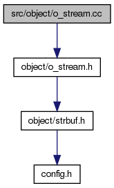
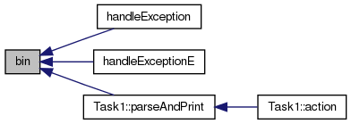
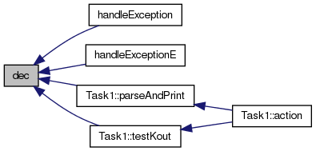

#include "object/o_stream.h"
Include-Abhängigkeitsdiagramm für o_stream.cc:

gehe zum Quellcode dieser Datei
Funktionen | |
| O_Stream & | bin (O_Stream &os) |
| switch basis of o_stream to binary Mehr ... | |
| O_Stream & | dec (O_Stream &os) |
| switch basis of o_stream to decimal Mehr ... | |
| O_Stream & | endl (O_Stream &os) |
| print buffer after adding a newline Mehr ... | |
| O_Stream & | hex (O_Stream &os) |
| switch basis of o_stream to hexadecimal Mehr ... | |
| O_Stream & | oct (O_Stream &os) |
| switch basis of o_stream to octal Mehr ... | |
Dokumentation der Funktionen
switch basis of o_stream to binary
Definiert in Zeile 95 der Datei o_stream.cc.
Hier ist ein Graph der zeigt, wo diese Funktion aufgerufen wird:

switch basis of o_stream to decimal
Definiert in Zeile 105 der Datei o_stream.cc.
Hier ist ein Graph der zeigt, wo diese Funktion aufgerufen wird:

print buffer after adding a newline
Definiert in Zeile 90 der Datei o_stream.cc.
Hier ist ein Graph der zeigt, wo diese Funktion aufgerufen wird:

switch basis of o_stream to hexadecimal
Definiert in Zeile 110 der Datei o_stream.cc.
Hier ist ein Graph der zeigt, wo diese Funktion aufgerufen wird:

switch basis of o_stream to octal
Definiert in Zeile 100 der Datei o_stream.cc.